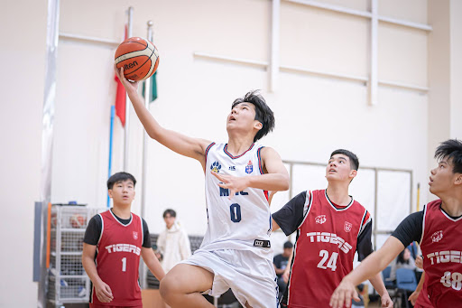
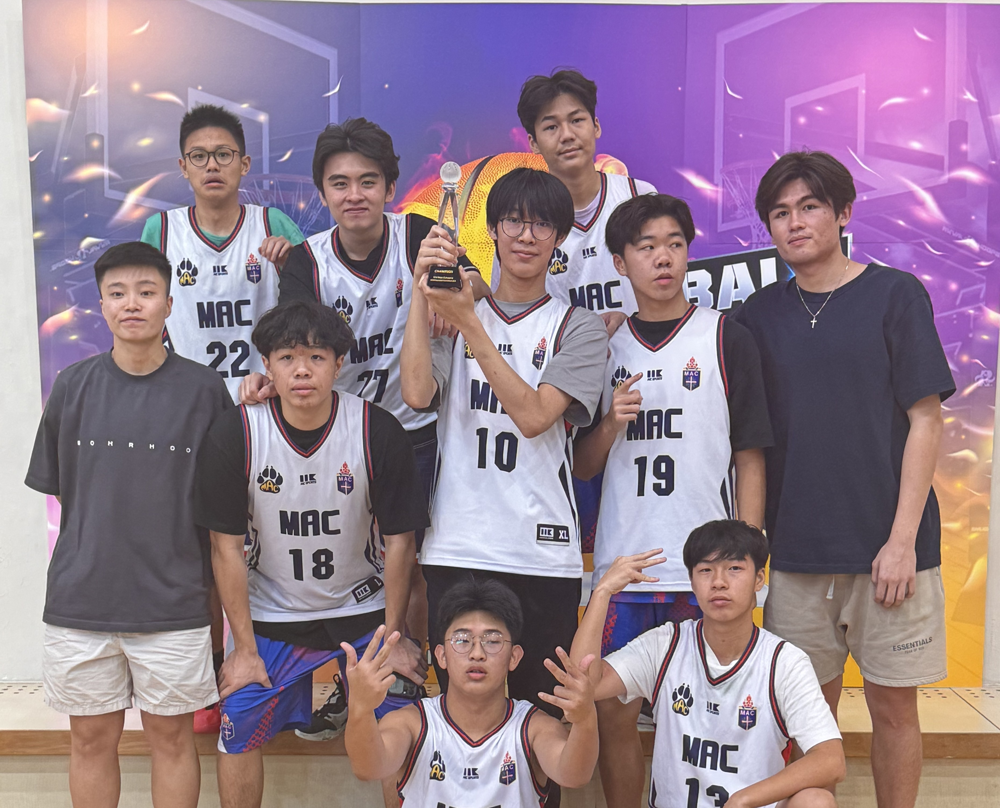
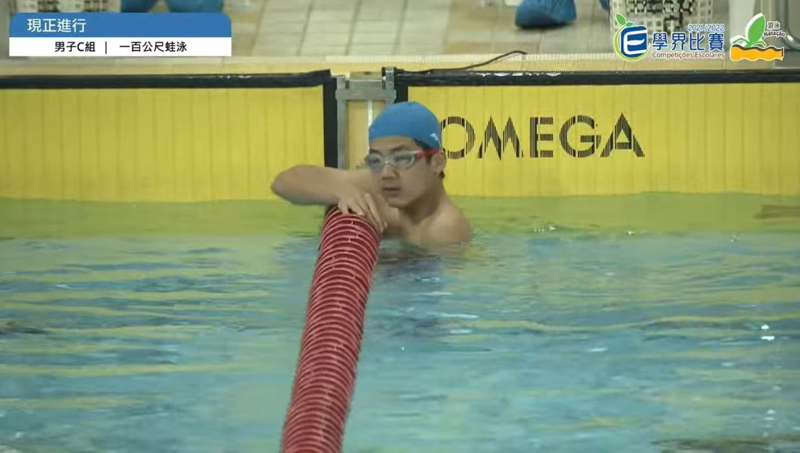
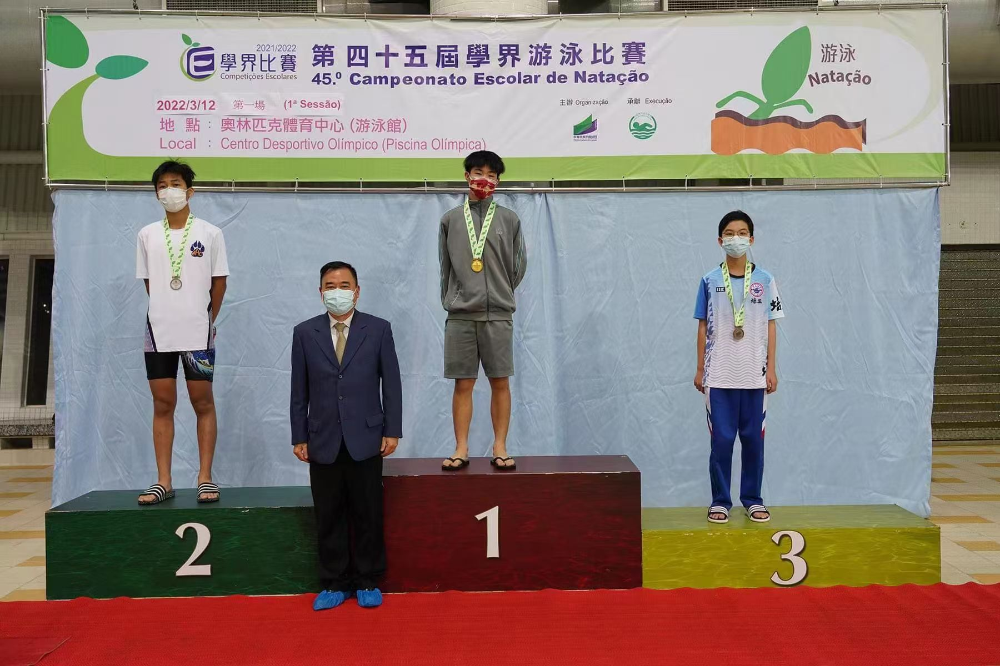
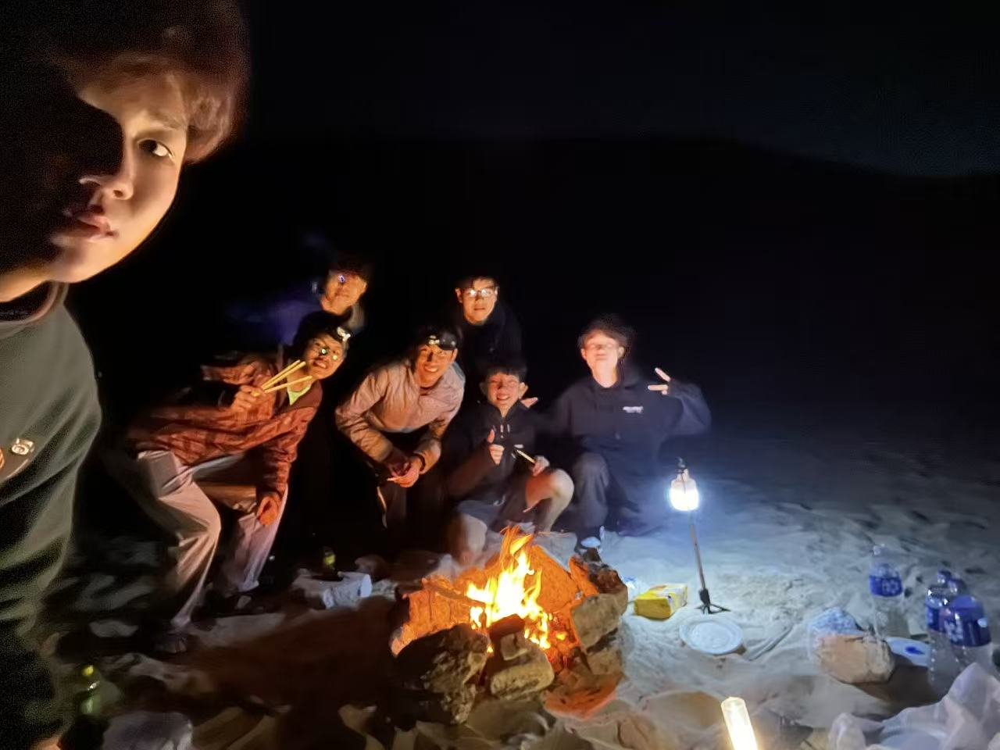
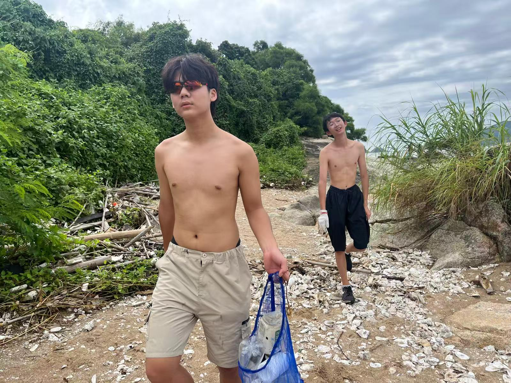

I enjoy expressing myself through performing, conveying powerful messages to lighten up other's mood with music. Originally trained as a classical pianist, I began appreciating other genres of music, adding drums and saxophone lessons to my repertoire. Throughout high school, I performed in various ensembles, from the orchestral MAC Concert Band as a saxophonist to the MAC Big Band as a jazz drummer, while also drumming for student-led pop-rock and jazz-fusion bands.
During my free time, I also record drum covers of my favourite songs posted on my Instagram page!
"Just The Two Of Us" improvised saxophone solo, featuring Wyatt and my band Window Cleaning Service!
[Best part at 0:24] Beautiful and meaningful moment, when the AdLib band's musical performance of "Pompeii" united individuals with developmental disabilities from all over the world, supporting the inclusivity awareness cause in the Macau Inclusion Conference!
Playing sports has shaped my resilience and sense of community. Through rigorous training, I've learned to push through challenges and persevere. I've also gained the ability to collaborate effectively, even with those I might not always connect with personally. Representing the MAC Basketball School Team and MAC Swimming Team, and competed as a member of the Kapok Swimming Team under the Macau Swimming Association, I honed my skills and teamwork through high-level competitions.

Cool picture taken by my photographer friends during our MISSA Championship Victory!

Cool picture taken by my photographer friends during our MISSA Championship Victory!

My 2nd Place win was broadcasted on the local news, representing the Macau Anglican College Swimming Team.

My 2nd Place win was broadcasted on the local news, representing the Macau Anglican College Swimming Team.
Lessons about global warming, and environmental vulnerability had kickstarted a small community of friends in which we actively appreciate and take care of the environment. We bond through our adventures in nature, and we share a collective goal of treasuring our world.

Our epic Hong Kong mountain camping adventure: we scavenged for firewood branches, stacked rocks, and blew through newspaper to ignite our own crackling campfire, cooking meals and staying cozy through the chilly night.

Clearing waste and trash in coastal areas under the blazing sun (that's why we looked so exhausted).